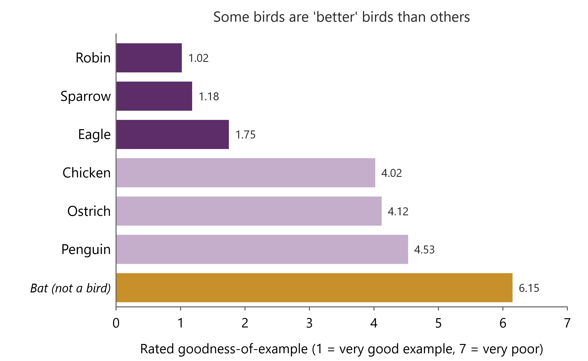
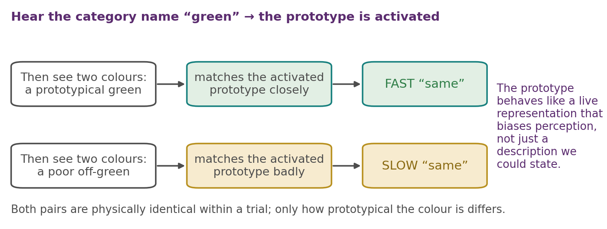
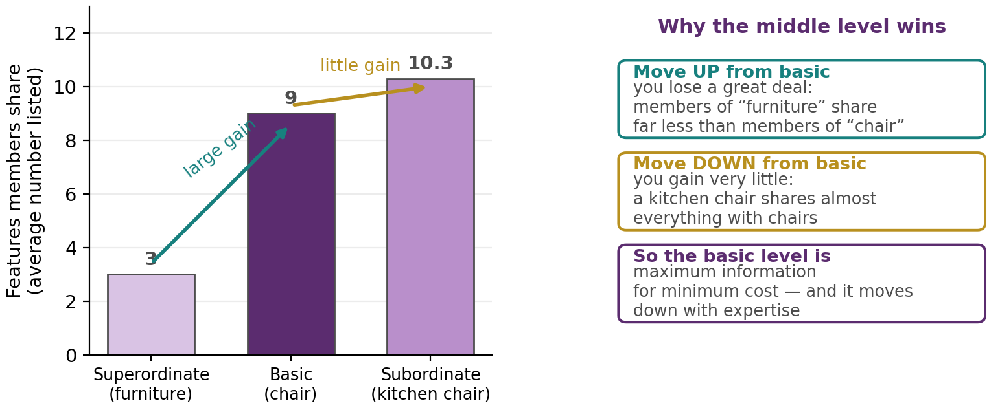
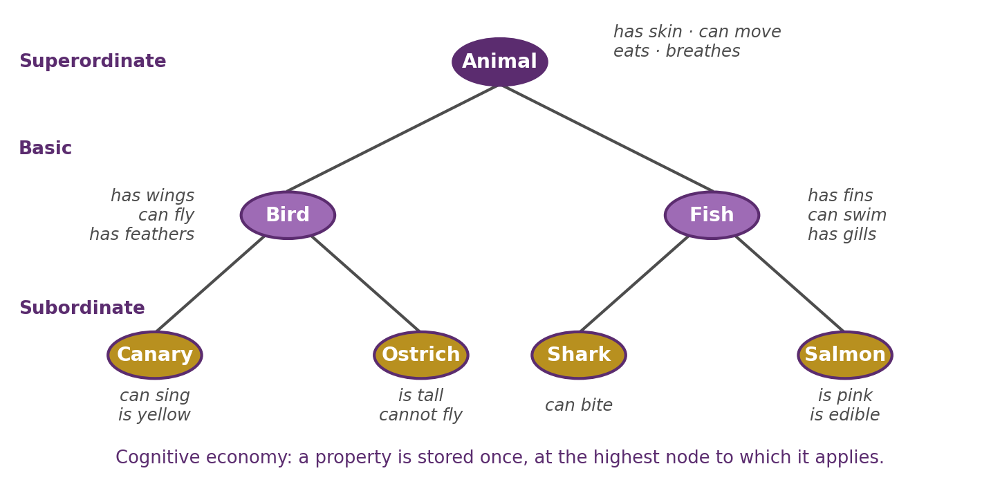
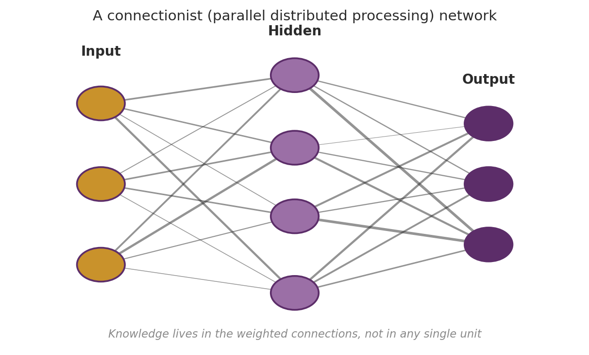
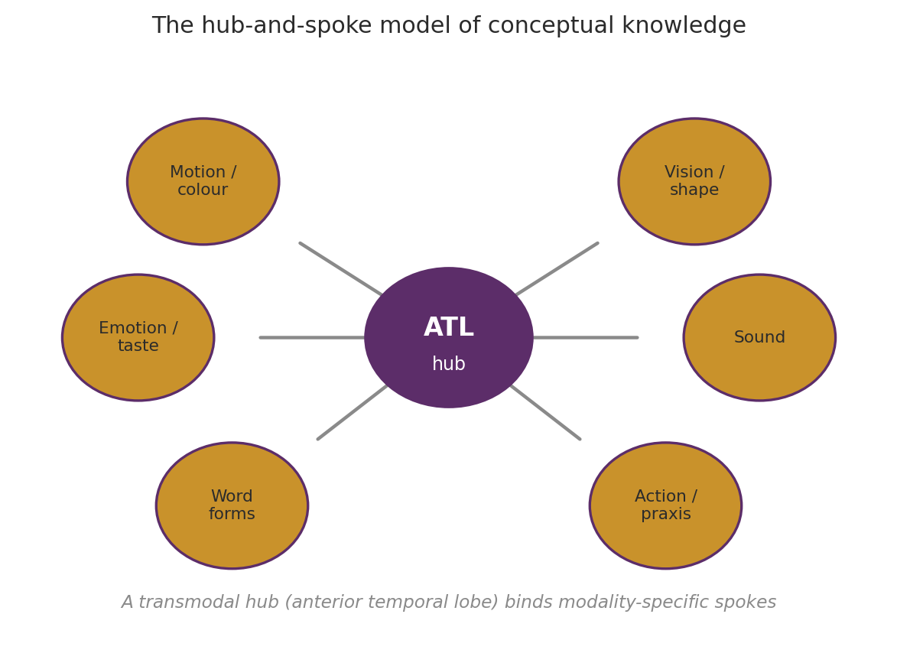
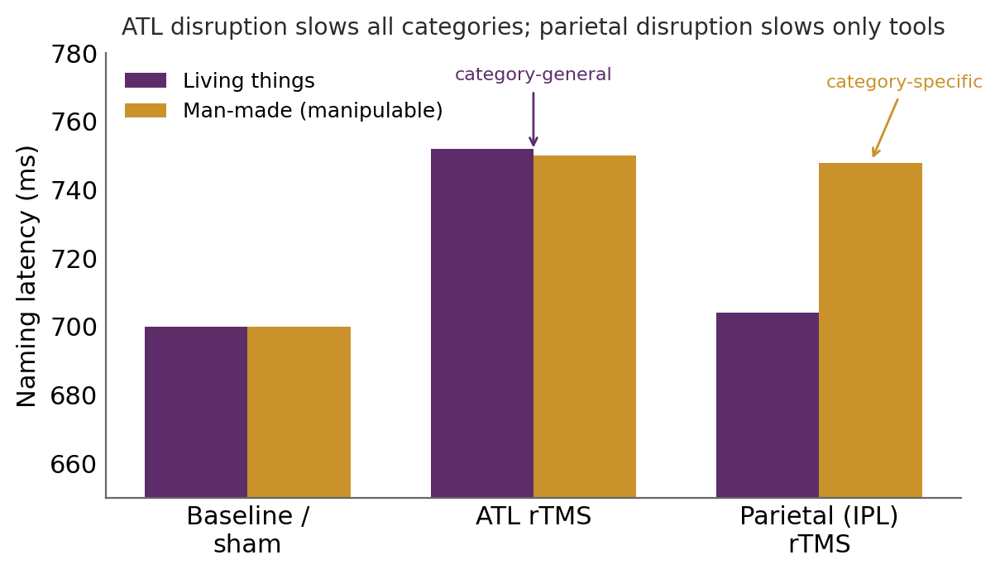

Chapter 7
Conceptual Knowledge
Where this chapter sits
The last three chapters were about memory. Chapter 6 in particular kept returning to one idea: that memory works by fitting experience to what we already know. Schemas filled in what was expected, and gist-based false recognition arose from extracting meaning rather than recording detail. All of that presupposed a stock of organised knowledge, and we never asked what that knowledge is.
This chapter asks. Memory does not store raw experience; it stores experience organised by what we already know, and the units of that organisation are concepts. A concept is a mental representation of a category, and it is what lets you walk into a room you have never seen, recognise the chairs, and sit down without deliberation.
Three questions structure what follows. What is a concept, and how is category membership decided? How are concepts organised and connected? And where, and in what form, does the brain hold them? The answers move from behaviour, through computational models, to physiology, and each level turns out to constrain the ones above it.
Learning objectives
7.1 What concepts are for
Consider how much you know the moment you learn that something is a truck, even a truck you have never seen (Murphy, 2019). You know it has wheels and an engine, that it carries loads, that it runs on fuel, roughly how it behaves in traffic. None of that came from the object in front of you. It came from the category.
A concept is therefore a pointer to knowledge. It provides a wealth of general information about an item, and at the same time lets you identify what is distinctive about a particular one. Above all, concepts let you generalise, extending what you have learned about a few instances to an effectively infinite set of new ones.
This is why concepts sit at the core of intelligent behaviour, and also why it has proved so hard to build machines that categorise as flexibly as a child. Real categories are surprisingly diverse, and their members do not line up behind a tidy rule. The rest of this chapter is largely the story of finding that out.
7.2 The definitional approach and why it fails
The oldest account is the definitional approach: a category has a set of features that are individually necessary and jointly sufficient for membership, and an object belongs if and only if it has them all. For some categories this works perfectly. A square is a four-sided polygon with equal sides and right angles; anything meeting that definition is a square, and nothing else is.
The trouble is that almost no everyday category behaves like this (Murphy, 2019). Define a bird as a warm-blooded, egg-laying, feathered vertebrate that flies, and the penguin breaks the definition while remaining unarguably a bird. Try to define dog by four legs and barking, and the three-legged dog and the dog that has lost its bark are still dogs. Notice the pattern: necessary features are often findable, but a set that is also sufficient usually is not. Even science struggles here. Pluto was demoted in 2006 because astronomers, who had worked for centuries with a list of planets rather than a definition, were finally forced to write one: the discovery of Eris, a distant body more massive than Pluto, left them either admitting a tenth planet or saying what a planet is.
The repair, due to Wittgenstein (1953) and made empirical by Rosch and Mervis (1975), is family resemblance. Members of a category resemble one another the way members of a family do, sharing overlapping features without any single feature being common to all. Chairs, stools, sofas and beanbags share no defining essence, yet they hang together as furniture through a web of partial similarities.
Category membership is therefore a matter of degree rather than a yes-or-no test, and that single shift sets up everything that follows. If membership is graded, then it should be measurable, and the categories themselves should have an internal structure with better and worse members.
7.3 Prototypes
They do. Ask people to rate how good an example each item is of its category and the ratings are strikingly consistent between people: a robin is a very good bird and a penguin a poor one; a table is good furniture and a rug poor (Rosch, 1975a). This is the typicality effect (Figure 7.1). Rosch's bird list even included the bat, which is not a bird at all, and it was rated worst of all (6.15). Notice where that leaves the penguin: closer to the bat than to the robin. Moving from a poor bird to a non-bird is a smaller step than moving from a good bird to a poor one, which is what graded membership predicts.

Typicality is perhaps the single most powerful predictor of how people deal with a category, and its reach is worth listing because it shows this is not merely a rating preference. Typical members are verified faster, produced first when people are asked to list a category's members, learned earlier by children, and used as the default when a category is mentioned without qualification. Ask someone to picture a bird and you will not get a penguin.
The prototype approach
The prototype approach explains all of this. On this view a concept is a summary representation of the whole category: a set of features weighted by how frequently they occur among its members (Rosch, 1973; Smith & Medin, 1981). It is an average of the members you have encountered rather than a definition. The bird prototype weights wings and feathers heavily, eating worms less, living in Antarctica less still. To classify a new object you compare it against this weighted summary, and the closer the match, the more typical it seems and the faster the decision.
Rosch and Mervis (1975) then pinned down where typicality comes from, and the answer has two halves rather than one. An item is typical to the extent that it has features frequent in its own category and lacks features frequent in other categories. The robin is a good bird because it has common bird features and few features belonging elsewhere. The penguin is a poor one not merely because it cannot fly, but because it swims and has fin-like wings, features that belong to a different category. Typicality is about contrast as much as about resemblance.
A prototype is a live representation, not just a description
Rosch (1975b) also showed that a prototype can be primed, and this result deserves attention because it changes what kind of thing a prototype is. Participants heard a colour name such as green and then saw a pair of colours to judge as the same or different (Figure 7.2). When the two colours matched, they were faster when the colours were good, prototypical greens than when they were poor, off-greens.

Follow what this rules out. If a prototype were merely a description we could produce on request, hearing the word green would not change how quickly two patches of colour could be compared. The fact that it does means the category name activated something that was already biasing perception before the colours arrived. The prototype behaves like a live representation rather than a stored summary waiting to be consulted, which connects it to the spreading activation of §7.6 and, further back, to the anticipatory account of attention in Chapter 2.
7.4 Exemplars, and prototype versus exemplar
The exemplar approach denies that we store any summary at all (Medin & Schaffer, 1978). On this view your concept of a category just is the collection of specific instances you have encountered: your vegetable concept is your remembered carrots, potatoes and spinach, not an abstract average. To classify a new object you compare it to those stored exemplars and assign it to the category whose members it most resembles.
This is obviously less economical than storing a single prototype, and at first it looks like a step backwards. But it buys three real advantages. It explains the typicality effect just as well, since typical items resemble more of the stored exemplars. It handles atypical members gracefully, because a penguin can be stored as itself rather than dismissed as a poor match to an average. And it copes with variable categories such as furniture, whose members are too diverse to average into any sensible single prototype: what would the average of a wardrobe and a beanbag look like?
Holding the two together
The two accounts are best held together rather than forced into a contest, and it is worth being precise about where they agree and differ.
What they share: both categorise by similarity rather than by rule, and both therefore predict graded membership and typicality effects. Against the definitional approach they are allies.
What is stored: the prototype approach keeps a general, abstract summary; the exemplar approach keeps specific instances. This is the real disagreement.
Where each is stronger: the prototype approach is more efficient for large, coherent categories, where an average is informative. The exemplar approach is more flexible for small, varied ones, and better at preserving the exceptions.
The evidence suggests people can do both, leaning on abstraction when a category is tight and on remembered instances when it is not, and perhaps relying more on the abstraction early in learning and more on remembered instances as experience accumulates (Smith & Minda, 1998). That is a less tidy conclusion than a winner, but it is the one the data support, and it is a recurring shape in this unit: two models that looked like rivals turn out to describe different operating conditions of one system.
7.5 Hierarchical organisation and the basic level
Categories nest inside one another at different levels of abstraction. A single object is at once a piece of furniture, which is the superordinate level, a chair, which is the basic level, and a kitchen chair, which is the subordinate level. Rosch and colleagues (1976) showed that these levels are not psychologically equal.
The basic level is privileged. It is the level people use spontaneously to name things: asked what an object is, they say chair, not furniture and not kitchen chair. It is the level children learn first. And it is the level at which we can act on a category in a uniform way, since there is a way to use chairs in general but no single way to use furniture in general.
Why the middle level?
Because of an information trade-off, and the trade-off is asymmetric in an interesting way. Moving up from the basic level to the superordinate loses a great deal: the members of furniture share far fewer features than the members of chair. Moving down from the basic level to the subordinate adds very little: a kitchen chair shares almost all its features with chairs in general, so the extra specificity buys almost nothing (Figure 7.3).

The basic level is therefore the level of maximum information for minimum cost, and it is where our categories do the most work for the least effort. Note that this is an argument from efficiency, not from anything intrinsic to chairs: the privileged level is wherever that trade-off happens to fall.
Which is why one qualification matters so much. The basic level is not fixed. For an expert it moves down. A birdwatcher does not see a bird but a song thrush, and names it as readily and as quickly as a novice names the basic category (Tanaka & Taylor, 1991). If the basic level were a property of the world, expertise could not move it. That it does move tells us the privileged level reflects how finely a particular person has learned to carve up a domain, and that has direct implications for how expertise is trained, which we return to in §7.8.
7.6 The computational approach: networks and connections
The behavioural approaches describe what categorisation does. The computational approach asks how concepts must be represented and connected for a mind to compute with them at all. Two model families dominate, and the second grew out of the failures of the first.
Semantic networks and spreading activation
Collins and Quillian (1969) proposed that concepts are nodes in a network, linked by relations, with properties stored at the nodes. Crucially, a property is stored at the highest level to which it applies, a principle of cognitive economy: has skin and can breathe are stored once at ANIMAL rather than repeated at every bird and fish beneath it (Figure 7.4).

To verify a fact you traverse the network, and the model makes a clean, quantitative prediction: the more links you must cross, the longer it should take. People are indeed faster to confirm that a canary can sing, a property stored right at CANARY, than that a canary can fly, stored one level up at BIRD, than that a canary has skin, stored two levels up at ANIMAL. This distance effect in sentence-verification times was the model's early triumph, and it is a good example of a psychological theory making a prediction precise enough to be measured in milliseconds.
The strict hierarchy soon ran into trouble, and the problems are worth knowing because they motivated everything that came after. First, it cannot explain typicality. If CANARY and OSTRICH are both exactly one link below BIRD, why is “a canary is a bird” verified faster than “an ostrich is a bird”? Distance is the same; the times are not. Second, link distance itself sometimes fails: people verify “a pig is an animal” faster than “a pig is a mammal” (Rips et al., 1973), even though MAMMAL sits closer to PIG in the hierarchy, which is the reverse of what a strict hierarchy predicts. Rips and colleagues traced this to rated semantic distance: people judge pig to be closer in meaning to animal than to mammal. Third, even the distance effect that looked like a triumph was confounded. Conrad (1972) showed that properties stored at higher levels also tend to be ones less often associated with the lower concept (people rarely mention that a canary has skin), and that when this association strength was controlled, much of the level effect disappeared.
The repair was spreading activation (Collins & Loftus, 1975). Drop the rigid hierarchy and arrange concepts by semantic relatedness instead, with shorter links between more closely associated concepts. Activating one node sends activation spreading to its neighbours, priming them so that they are recognised faster. This is exactly what lexical-decision and priming studies show: reading nurse speeds recognition of doctor, because activation has already travelled along a short link (Meyer & Schvaneveldt, 1971). The revision keeps the network idea while recasting typicality and association as differences in link strength and distance rather than as levels in a tree.
Connectionist (parallel distributed processing) models
Connectionism takes a different route again. Instead of one node per concept, knowledge is held in the pattern of weighted connections across many simple units arranged in layers: an input layer, one or more hidden layers, and an output layer, all processing in parallel (Figure 7.5; Rogers & McClelland, 2004). A concept such as canary may enter the network through a single input unit, but that unit is only a label: what the network knows about canaries is a distributed pattern of activation across the hidden units, and each connection carries a weight determining how strongly one unit drives the next. The network learns not by being given rules but by adjusting those weights gradually in response to experience.

Two properties make this attractive as a model of the brain, and both are consequences of distributing the knowledge rather than extra assumptions. It shows graceful degradation: because no fact sits in one place, damaging part of the network degrades performance gradually rather than deleting specific items, which is how real brain damage usually behaves and which no node-based model predicts naturally. And it generalises: training the network on some properties of a concept automatically informs related concepts, mirroring the way learning one thing helps with similar things.
Its main mismatch with people is instructive. A connectionist network typically needs many exposures to learn, whereas we can sometimes acquire a concept in a single trial. Gradual weight change is exactly what buys graceful degradation and generalisation, so the weakness and the strengths have the same source.
Comparing the two families
Both commit to representing knowledge in interconnected units and to the importance of relations between concepts. They differ in structure, since a semantic network is organised and often hierarchical while a connectionist network is distributed and parallel; in where knowledge lives, in labelled nodes and links versus in weights; and in learning, since semantic networks were specified by the modeller whereas connectionist networks acquire their weights gradually from experience. The most telling difference is that connectionist networks handle typicality naturally, as graded patterns of activation, where the strict hierarchy could not handle it at all.
7.7 The physiological approach: where concepts live
The deepest question is where, and in what form, the brain holds a concept. The starting evidence is neuropsychological, and it is the double-dissociation logic of Chapter 4 applied to knowledge rather than to memory systems.
Category-specific deficits
Some patients, after brain damage, lose the ability to name living things while naming man-made objects normally; others show the reverse. Patients K.C. and E.W. (Blundo et al., 2006; Caramazza & Shelton, 1998; reviewed by Mahon & Caramazza, 2009), for instance, could correctly name pictures of non-living things such as a car or a table, and also of fruits and vegetables such as a tomato or a pear, yet performed poorly when asked to name animals. Taken together with the patients who show the reverse (Warrington & McCarthy, 1983, 1987), this forms a double dissociation, which means the brain does not store all concepts in one undifferentiated place: different kinds of knowledge depend on partly different tissue.
A note to prevent confusion. This K.C., a woman whose animal-specific deficit followed herpes simplex encephalitis (Blundo et al., 2006), is not the K.C. of Chapter 4, who lost episodic memory while retaining semantic knowledge. Patient initials are reused across the literature, and the two cases bear on quite different questions.
Several accounts try to say what the organising principle is. The sensory-functional hypothesis (Warrington & Shallice, 1984) proposes that we know living things mainly through their sensory properties, how they look, and man-made things mainly through their function, what they are for, so damage to sensory-feature stores hits living things hardest and damage to function stores hits artifacts. K.C. and E.W. already strain this account: fruits and vegetables are living things known largely by how they look and taste, yet their naming was spared. The multiple-factor approach (Cree & McRae, 2003; Hoffman & Lambon Ralph, 2013) refines this: concepts are distinguished along several dimensions at once, with animals weighted towards motion, colour and size, and artifacts towards the actions performed with them. The semantic-category approach proposes, more strongly, dedicated neural circuits for particular categories (Caramazza & Shelton, 1998), and patients like E.W. were its main motivation: if evolutionarily important domains such as animals and plant foods each have their own circuits, animal knowledge can be lost while knowledge of fruit and vegetables is spared. Each captures part of the data and none alone captures all of it, which is a signal that the organising principle may be something more general.
The embodied approach
The embodied approach holds that a concept is not an abstract symbol filed away from the body, but is grounded in the very sensory and motor systems used to perceive and act on its referent. To understand grasp is, in part, to re-enact the neural pattern of grasping. Meaning, on this view, is built from the body outward rather than handed down to it: concepts are the residue of an organism's dealings with the world, and cognition is ultimately for action.
Two lines of evidence make the case concrete. Mirror neurons, first recorded in the premotor cortex of macaques, fire both when the monkey performs an action and when it observes another performing the same action (Rizzolatti & Craighero, 2004); evidence for a comparable system in humans comes indirectly from imaging and TMS. They provide a possible mechanism by which understanding an action could reuse the machinery for doing it, although how much they contribute to understanding, rather than merely accompanying it, remains disputed (Hickok, 2009). And semantic somatotopy: when people read action words such as lick, pick and kick, the words differentially engage the face, hand and leg regions of motor cortex, in the same somatotopic order as the movements themselves (Hauk et al., 2004). The word reaches into the motor map.
Embodiment also claims to reach abstract concepts, which on this account are understood through concrete, bodily grounded metaphor: wealth, for instance, is grasped through the accumulation of possessions and a better quality of life, and the passage of time through movement, the changing seasons and ageing. Abstract concepts are the approach's hardest case, and opinions divide over how far the grounding goes. Strong versions hold that even justice or prime number are scaffolded on bodily metaphor; weaker versions accept that some knowledge is genuinely abstracted away from the body, which is the position the next subsection takes up.
It is worth noting how far the framework extends beyond this chapter. Perception, action, memory, language and social cognition have all been reconsidered through it, which is a strength in that it is unifying and a risk in that a framework which explains everything constrains little.
The hub-and-spoke model
A concept such as banana binds together its colour, shape, taste, the feel of peeling it and the word itself, each represented in a different, modality-specific region, or spoke. The hub-and-spoke model (Patterson et al., 2007; Lambon Ralph et al., 2017) proposes that these spokes are bound into a coherent, generalisable concept by a transmodal hub in the anterior temporal lobes, a single functional system that spans both hemispheres (Figure 7.6).

The model earns its place by reconciling the two demands the rest of this section has set up. The spokes keep concepts grounded in perception and action, which is the embodied insight. The hub is what lets knowledge transfer across modalities and generalise across members, which is what abstraction requires and what strong embodiment struggles to deliver. So hub-and-spoke is not neutral between the positions just described: it is a commitment to the weaker one, and its evidence counts against strong embodiment as much as against disembodied symbols. It also makes testable predictions about what damage to each part should do.
The evidence is unusually convergent. Patients with semantic dementia, whose atrophy is centred on the anterior temporal lobes of both hemispheres, though usually more on one side, lose conceptual knowledge across every modality at once, for words and pictures alike, which is exactly what a damaged hub predicts and what a damaged spoke could not produce. And the effect can be produced temporarily in healthy people with transcranial magnetic stimulation, which converts a correlation into an intervention.
Pobric, Jefferies and Lambon Ralph (2010) found that repetitive TMS over the left anterior temporal lobe slowed naming for both living things and man-made objects, a category-general impairment, whereas TMS over the left inferior parietal lobe slowed naming only for man-made, manipulable objects such as tools, a category-specific one (Figure 7.7).

That double pattern is the hub-and-spoke signature, and the reasoning is worth spelling out because it is the same logic as Chapter 4's dissociations, now produced deliberately rather than found. Disrupt the hub and everything suffers, because everything routes through it. Disrupt a spoke, here the parietal region supporting how we manipulate objects, and only the concepts that lean on that spoke suffer. Which region is the hub is therefore not assumed: it is identified by which disruption is category-general and specifically semantic. The second condition matters, because slowing across every category could equally come from disrupting a general stage of naming, such as retrieving or articulating a word. Pobric and colleagues ruled this out with a control task: anterior temporal stimulation slowed the naming of pictures, which requires retrieving a concept, but not the naming of numbers, which requires the same spoken output with little conceptual retrieval.
It also explains a simple demonstration you can run on yourself. People are faster to judge a related word pair such as cat and dog than an unrelated pair such as cat and hammer. Related concepts share spokes and sit close together in the semantic network, so activating one primes the other. Notice that both the network account of §7.6 and the hub-and-spoke account of this section predict it, which is a reminder that the models in this chapter overlap rather than compete cleanly.
7.8 Categorisation in the world
Categorisation is not a laboratory curiosity; it is the machinery of fast, expert judgement. A radiologist reading a scan, a mechanic hearing an engine and a birdwatcher glimpsing a wing all do the same thing: they match the case to stored knowledge and act, usually without deliberation. Two lessons from this chapter carry straight into that competence, and they pull in opposite directions.
The first is that expertise works partly by moving the basic level. The novice sees a rash; the dermatologist sees a specific condition and its likely cause, and names it as readily as the novice names the coarse category. Training a professional is therefore in large part training new basic-level categories, which is a more precise claim than saying that experts know more. They do not merely have more facts attached to the same categories; they have different categories.
The second is that because categorisation runs on typicality, it is fast and usually right but systematically biased. Typical cases are recognised quickly and atypical ones are missed or misfiled. That is exactly why the atypical presentation, the heart attack without chest pain, the fracture that does not look like the textbook, is the one that slips through. The error is not a lapse of care; it is the cost of the mechanism that makes expert judgement fast. A good clinician learns to distrust the fluent, prototypical match precisely when the stakes are high, which is the same lesson Chapter 5 drew about fluency in studying and Chapter 6 drew about fluency in believing.
When the category is a kind of person
The same mechanism has a social edge. When the category is a kind of person, a prototype becomes a stereotype: a weighted summary that speeds judgement and, just as with birds, favours the typical member while resisting the atypical or borderline one. The cognitive processes involved are the ordinary ones described in this chapter. What makes them consequential is the object they are applied to, and the fact that the people being categorised have an interest in the outcome that chairs and birds do not.
This also connects categorisation forward to the reasoning we meet later in the unit, where the tendency to judge something by how well it resembles a prototype, rather than by how common it actually is, reappears as the representativeness heuristic.
Concepts make thought possible by letting us treat new things as instances of old ones. The price of that power is that we sometimes treat a thing as what it resembles rather than as what it is.
Chapter summary
Concepts are pointers to knowledge that let us generalise from a few instances to an unlimited set of new ones, which is why they sit at the core of intelligent behaviour.
Strict definitions fail for almost all everyday categories: necessary features can usually be found, but sufficient sets cannot. Categories are held together by family resemblance (Rosch & Mervis, 1975), so membership is a matter of degree.
Graded membership produces the typicality effect, which predicts verification speed, order of production, order of acquisition and default interpretation. An item is typical to the extent that it has features common in its own category and lacks features common in others.
The prototype approach stores a weighted-feature summary of a category. Rosch's (1975b) priming study shows the prototype is a live representation that biases perception, not merely a description we could state on request.
The exemplar approach stores specific instances instead (Medin & Schaffer, 1978). It handles atypical members and highly variable categories better; the prototype approach is more efficient for large, coherent ones. People appear to use both.
Categories are organised hierarchically and the basic level is psychologically privileged, because moving up from it costs a great deal of shared information while moving down adds very little (Rosch et al., 1976). Expertise shifts the basic level downward, which shows the privileged level reflects the knower rather than the world.
Semantic-network models (Collins & Quillian, 1969) explain sentence-verification times through cognitive economy and link distance, but cannot explain typicality and face awkward verification results. Spreading activation (Collins & Loftus, 1975) repairs this by replacing the rigid hierarchy with graded semantic relatedness.
Connectionist models store knowledge in distributed weights, which gives them graceful degradation, generalisation and a natural account of typicality. Their need for many exposures is the same property that produces those strengths.
Category-specific deficits show conceptual knowledge is not stored in one place. The sensory-functional, multiple-factor and semantic-category accounts each explain part of the pattern.
The embodied approach grounds concepts in sensorimotor systems, supported by mirror neurons and semantic somatotopy, and extends well beyond conceptual knowledge. Abstract concepts are its hardest case.
The hub-and-spoke model binds modality-specific spokes through a transmodal hub in the anterior temporal lobes, and so occupies a middle position between embodiment and abstraction. It is supported by semantic dementia and by the double TMS pattern in Pobric and colleagues (2010): hub disruption is category-general, spoke disruption category-specific.
In the world, expertise works partly by moving the basic level, while typicality makes categorisation fast, usually right, and systematically blind to the atypical case. Applied to people, a prototype becomes a stereotype.
Self-check questions
Explain what is meant by calling a concept a pointer to knowledge, using an example of an object you have never encountered.
Why does the definitional approach succeed for square but fail for bird? What does family resemblance offer instead, and what does it cost us in precision?
Rosch and Mervis gave a two-part account of typicality. State both parts, and use them to explain why a penguin is a poor bird in a way that mentioning flight alone does not capture.
Describe Rosch's priming study and explain precisely what it rules out. Why could a prototype that was merely a stored description not produce this result?
A robin is judged a better bird than a penguin. Explain this on the prototype account and on the exemplar account. What can the exemplar account do that the prototype account finds awkward, and why?
Why is the prototype approach better suited to large coherent categories and the exemplar approach to small varied ones? Use furniture in your answer.
Asked what an object is, people say chair rather than furniture or kitchen chair. Explain the information trade-off that makes the basic level special, and why the trade-off is asymmetric.
What happens to the basic level with expertise, and why does that finding tell us the privileged level is a fact about the knower rather than about the world?
Collins and Quillian predicted that “a canary has skin” takes longer to verify than “a canary can sing”. Explain the prediction and the principle of cognitive economy behind it.
Give two findings the strict hierarchy could not handle, and explain how spreading activation addresses each.
What is graceful degradation, and why does it make connectionist models attractive as accounts of the brain? Why can a node-based model not produce it as easily?
Connectionist networks usually need many exposures to learn, whereas people sometimes learn a concept in one trial. Explain why this weakness has the same source as the model's strengths.
Set out the similarities and the three main differences between semantic-network and connectionist models, and say which handles typicality better and why.
Patients K.C. and E.W. could name cars, tables, tomatoes and pears but not animals. Explain what this pattern shows and why a double dissociation is needed rather than a single case.
Distinguish the sensory-functional, multiple-factor and semantic-category accounts of category-specific deficits. What does it suggest that each explains part of the data and none all of it?
Give one piece of evidence for the embodied approach, and state the strongest objection to it. How does weak embodiment respond?
rTMS over the anterior temporal lobe slows naming for all categories; over the parietal lobe it slows only tools. Explain how this pattern identifies the hub and the spoke, why the identification does not have to be assumed in advance, and what control shows that the anterior temporal effect is semantic rather than a general slowing of speech.
Why is the hub-and-spoke model described as a middle position rather than a rival to the embodied approach?
Using typicality and the basic level, explain both why an experienced clinician is fast and accurate and why they are most at risk of missing an atypical case. Why is this not a failure of diligence?
Explain how a prototype becomes a stereotype, and say what is and is not different about the cognitive processes involved.
Model answers to these questions are in the answers companion, Chapter 7. Try each question yourself before you look.
Attribution and licence
This chapter is licensed under a Creative Commons Attribution-NonCommercial-ShareAlike 4.0 International (CC BY-NC-SA 4.0) licence. It adapts and remixes the sources below; changes were made, including restructuring into the unit's teaching scaffold, rewriting for voice and level, adding the computational and physiological approaches from primary studies, writing the embodied-cognition and hub-and-spoke sections in full, and adding original figures.
Murphy (2019), “Categories and Concepts”, in Noba textbook series: Psychology. CC BY-NC-SA 4.0. Base source for §§7.1 to 7.5: what concepts are for, the definitional approach and its failure, family resemblance, typicality, prototypes, exemplars and the basic level.
Graham and Griffin (2025), Cognitive Psychology, 5.2–5.4 (Central New Mexico Community College). CC BY-NC-SA 4.0. Base source for basic-level categorisation and the connectionist or parallel distributed processing material in §7.6.
Andrade and Walker (2019), Cognitive Psychology (LibreTexts / College of the Canyons), Chapter 12. CC BY 4.0. Supplement for categorisation.
Cited but not adapted: Pobric, Jefferies and Lambon Ralph (2010) is cited in the ordinary way as the source for the TMS evidence in §7.7. Figure 7.7 is an original drawing of the reported pattern, and nothing has been reproduced.
All other studies cited in this chapter are described from standard knowledge in the author's own wording, with no source text adapted.
Full bibliographic details for every work cited in this chapter, including the sources named above, are given in the References below.
References
Andrade, M., & Walker, N. (2019). Cognitive psychology. College of the Canyons; LibreTexts. https://socialsci.libretexts.org/Bookshelves/Psychology/Cognitive_Psychology/Cognitive_Psychology_(Andrade_and_Walker)
Blundo, C., Ricci, M., & Miller, L. (2006). Category-specific knowledge deficit for animals in a patient with herpes simplex encephalitis. Cognitive Neuropsychology, 23(8), 1248–1268. https://doi.org/10.1080/02643290600896449
Caramazza, A., & Shelton, J. R. (1998). Domain-specific knowledge systems in the brain: The animate–inanimate distinction. Journal of Cognitive Neuroscience, 10(1), 1–34. https://doi.org/10.1162/089892998563752
Collins, A. M., & Loftus, E. F. (1975). A spreading-activation theory of semantic processing. Psychological Review, 82(6), 407–428. https://doi.org/10.1037/0033-295X.82.6.407
Collins, A. M., & Quillian, M. R. (1969). Retrieval time from semantic memory. Journal of Verbal Learning and Verbal Behavior, 8(2), 240–247. https://doi.org/10.1016/S0022-5371(69)80069-1
Conrad, C. (1972). Cognitive economy in semantic memory. Journal of Experimental Psychology, 92(2), 149–154. https://doi.org/10.1037/h0032072
Cree, G. S., & McRae, K. (2003). Analyzing the factors underlying the structure and computation of the meaning of chipmunk, cherry, chisel, cheese, and cello (and many other such concrete nouns). Journal of Experimental Psychology: General, 132(2), 163–201. https://doi.org/10.1037/0096-3445.132.2.163
Graham, R., & Griffin, S. (2025). Cognitive psychology. Central New Mexico Community College. https://nmoer.pressbooks.pub/cognitivepsychology/
Hauk, O., Johnsrude, I., & Pulvermüller, F. (2004). Somatotopic representation of action words in human motor and premotor cortex. Neuron, 41(2), 301–307. https://doi.org/10.1016/S0896-6273(03)00838-9
Hickok, G. (2009). Eight problems for the mirror neuron theory of action understanding in monkeys and humans. Journal of Cognitive Neuroscience, 21(7), 1229–1243. https://doi.org/10.1162/jocn.2009.21189
Hoffman, P., & Lambon Ralph, M. A. (2013). Shapes, scents and sounds: Quantifying the full multi-sensory basis of conceptual knowledge. Neuropsychologia, 51(1), 14–25. https://doi.org/10.1016/j.neuropsychologia.2012.11.009
Lambon Ralph, M. A., Jefferies, E., Patterson, K., & Rogers, T. T. (2017). The neural and computational bases of semantic cognition. Nature Reviews Neuroscience, 18(1), 42–55. https://doi.org/10.1038/nrn.2016.150
Mahon, B. Z., & Caramazza, A. (2009). Concepts and categories: A cognitive neuropsychological perspective. Annual Review of Psychology, 60, 27–51. https://doi.org/10.1146/annurev.psych.60.110707.163532
Medin, D. L., & Schaffer, M. M. (1978). Context theory of classification learning. Psychological Review, 85(3), 207–238. https://doi.org/10.1037/0033-295X.85.3.207
Meyer, D. E., & Schvaneveldt, R. W. (1971). Facilitation in recognizing pairs of words: Evidence of a dependence between retrieval operations. Journal of Experimental Psychology, 90(2), 227–234. https://doi.org/10.1037/h0031564
Murphy, G. (2019). Categories and concepts. In R. Biswas-Diener & E. Diener (Eds.), Noba textbook series: Psychology. DEF Publishers. http://noba.to/6vu4cpkt
Patterson, K., Nestor, P. J., & Rogers, T. T. (2007). Where do you know what you know? The representation of semantic knowledge in the human brain. Nature Reviews Neuroscience, 8(12), 976–987. https://doi.org/10.1038/nrn2277
Pobric, G., Jefferies, E., & Lambon Ralph, M. A. (2010). Category-specific versus category-general semantic impairment induced by transcranial magnetic stimulation. Current Biology, 20(10), 964–968. https://doi.org/10.1016/j.cub.2010.03.070
Rips, L. J., Shoben, E. J., & Smith, E. E. (1973). Semantic distance and the verification of semantic relations. Journal of Verbal Learning and Verbal Behavior, 12(1), 1–20. https://doi.org/10.1016/S0022-5371(73)80056-8
Rizzolatti, G., & Craighero, L. (2004). The mirror-neuron system. Annual Review of Neuroscience, 27, 169–192. https://doi.org/10.1146/annurev.neuro.27.070203.144230
Rogers, T. T., & McClelland, J. L. (2004). Semantic cognition: A parallel distributed processing approach. MIT Press.
Rosch, E. H. (1973). Natural categories. Cognitive Psychology, 4(3), 328–350. https://doi.org/10.1016/0010-0285(73)90017-0
Rosch, E. (1975a). Cognitive representations of semantic categories. Journal of Experimental Psychology: General, 104(3), 192–233. https://doi.org/10.1037/0096-3445.104.3.192
Rosch, E. (1975b). The nature of mental codes for color categories. Journal of Experimental Psychology: Human Perception and Performance, 1(4), 303–322. https://doi.org/10.1037/0096-1523.1.4.303
Rosch, E., & Mervis, C. B. (1975). Family resemblances: Studies in the internal structure of categories. Cognitive Psychology, 7(4), 573–605. https://doi.org/10.1016/0010-0285(75)90024-9
Rosch, E., Mervis, C. B., Gray, W. D., Johnson, D. M., & Boyes-Braem, P. (1976). Basic objects in natural categories. Cognitive Psychology, 8(3), 382–439. https://doi.org/10.1016/0010-0285(76)90013-X
Smith, E. E., & Medin, D. L. (1981). Categories and concepts. Harvard University Press.
Smith, J. D., & Minda, J. P. (1998). Prototypes in the mist: The early epochs of category learning. Journal of Experimental Psychology: Learning, Memory, and Cognition, 24(6), 1411–1436. https://doi.org/10.1037/0278-7393.24.6.1411
Tanaka, J. W., & Taylor, M. (1991). Object categories and expertise: Is the basic level in the eye of the beholder? Cognitive Psychology, 23(3), 457–482. https://doi.org/10.1016/0010-0285(91)90016-H
Warrington, E. K., & McCarthy, R. (1983). Category specific access dysphasia. Brain, 106(4), 859–878. https://doi.org/10.1093/brain/106.4.859
Warrington, E. K., & McCarthy, R. (1987). Categories of knowledge: Further fractionations and an attempted integration. Brain, 110(5), 1273–1296. https://doi.org/10.1093/brain/110.5.1273
Warrington, E. K., & Shallice, T. (1984). Category specific semantic impairments. Brain, 107(3), 829–854. https://doi.org/10.1093/brain/107.3.829
Wittgenstein, L. (1953). Philosophical investigations (G. E. M. Anscombe, Trans.). Blackwell.